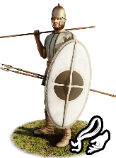
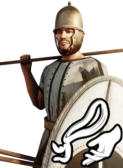

Messapian Light Spearmen


Class: spearmen · Category: infantry · Men per unit: 60
Description
Forming the bulk of the tribal levies across the Salentina or Messapian peninsula, these Light Spearmen are mostly untrained infantry called into arms in haste to defend their homes or to support their allies in war. Raised from the free citizenry of Messapia, these warriors enter combat armed with thrusting spears as their primary weapon, accompanied by secondary throwing javelins to harass the enemy formations before joining battle. For protection, each soldier carries a large oval thureos shield constructed from wood with a central vertical spine and raised boss, decorated with native geometric, rayed, or sunburst motifs. While they all fight in patterned tunics secured by bronze belts, the wealthier men among these Messapians have been able to furnish their own bronze helmets, be it of the Pilos, Montefortino, or Illyrian types. These men are the most basic infantry unit of the Messapians and can be relied upon to defend their borders. However, it would be a mistake to expect them to hold the line for long or to win you the battle, unless you can use their larger numbers as an advantage to sustain casualties and overwhelm the enemy.
Historical background
The Messapians were an Oscan-adjacent, Paleo-Balkanic population who occupied the southeastern heel of Italy, known collectively in Greek accounts as the southern branch of the Iapyges alongside the Daunians and Peucetians (Hdt. 4.99; Strab. 6.3.1-5; Lombardo, s.v. 'Messapians, Messapia' and 'Iapyges, Iapygia', in: Brill's New Pauly [2006]). Throughout the 6th to 4th centuries BC, Messapian society grew around heavily fortified urban centers surrounded by massive stone walls, including Cavallino, Manduria, Oria, Vaste, and Ugento (Lombardo (2006); D'Andria and Semeraro, 'Introduction', in: idem (eds.), Messapia: Economy and Exchanges (2022), pp. 1-2; Semeraro, 'Methods and Practices’, in: ibid. (2022), pp. 3-16).
During the 4th century BC, Italic infantry across the south of Italy underwent a tactical evolution, transitioning from the round Greek aspis toward the large, oval thureos or scutum (Burns, The Cultural and Military Significance (2005), pp. 157-161). Burns points out that the aspis, with its central two-point arm loop (porpax) and grip, was designed for a heavy body shove in close formation, but left the lower legs heavily exposed and offered limited protection against missile troops armed with bows or javelins (Burns (2005), p. 152). Therefore, the thureos was much better suited to the Italic combat style, especially in the Oscan territories of the Samnites, Lucanians, and Bruttians, who – like the Illyrians – fought in groups (maniple-like), heavily focussed on skirmishing. The thureos protects much more of the legs and can be held further away from the body, which was especially important in Italy due to the usage of shield-penetrating pila. It is, therefore, not surprising that this spined oval shield regularly appears in South Italic tomb paintings and vase paintings equipped alongside long spears and throwing weapons (Burns (2005), pp. 157-161).
The military capacity of the Messapian infantry was well demonstrated across centuries of warfare against their neighbours. This included the Spartan colony of Taras, which found itself faced with enough difficulties to employ foreign generals to lead it in its wars against the Messapians (Paus. 10.10.6; Strab. 6.3.4). In 473 BC, a 20,000-strong Messapian host routed a combined Tarentine and Rhegian army in what Herodotus termed "the greatest slaughter of Greeks that is known to have occurred up to my time", slaying over 3,000 Rhegians alone and an undisclosed number of Tarentines (Hdt. 7.170; Diod. Sic. 11.52). Later, as Taras called upon help from Sparta itself, the Messapians defeated and killed King Archidamos III of Sparta outside the walls of Manduria in 338 BC (Strab. 6.3.4; Plut. Agis 3.2). Following their participation in the Pyrrhic War alongside Tarentine and Samnite forces against Rome (Plut. Pyrrh. 13, 15, 21), the Messapians and Sallentini were finally conquered in 266 BC by the consular armies of Numerius Fabius Pictor and Decius Junius Pera. They celebrated triumphs ‘de Sallentineis Messapieisque’ (military triumphs over the Sallentine and Messapian tribes in southeast Italy). Henceforth, the Messapians were integrated into the Socii system, and when Rome compiled the census of total allied military manpower during the Gallic crisis of 225 BC (prior to the Battle of Telamon), the combined Iapygian and Messapian levy registered an astounding 50,000 infantry alongside 16,000 cavalry (Polyb. 2.24.11). This goes to show the great manpower reserves available in the southeastern peninsula, which certainly would have included huge quantities of basic spearmen.
Stats
| Rank in roster | ||
|---|---|---|
| Men per unit | 60 | █████████· 87% |
| Attack | 9 | █········· 12% |
| Charge bonus | 4 | ██········ 17% |
| Defence | 26 | ███······· 32% |
| · armour | 2 | █········· 13% |
| · defence skill | 20 | █████····· 47% |
| · shield | 4 | █████····· 48% |
| Morale | 7 | █········· 10% |
| Discipline | Impetuous (may charge without orders) | |
| Training | Untrained | |
| Recruitment cost | 1,400 dn | █········· 13% |
| Upkeep per turn | 510 dn | ██········ 20% |
| Turns to recruit | 2 |
Weapons
| Primary | Secondary | Primary | Secondary | Primary | Secondary | Primary | Secondary | ||||
|---|---|---|---|---|---|---|---|---|---|---|---|
| Attack | 9 | 7 | Type | thrown · blade | melee · blade | Projectile | javelin | — | Ammunition | 4 | — |
| Charge bonus | 4 | 4 | Damage | piercing | piercing | Range | 50 | — | Properties | Used just before charging into combat · thrown | Light spear (braced against cavalry charges from the front) · +8 attack against cavalry |
Defence
| Primary | Secondary | Primary | Secondary | Primary | Secondary | Primary | Secondary | ||||
|---|---|---|---|---|---|---|---|---|---|---|---|
| Total | 26 | — | Armour | 2 | — | Defence skill | 20 | — | Shield | 4 | — |
Condition and terrain
| Hit points | 1 | Ground: scrub / sand / forest / snow | -1 / 0 / -4 / 0 | Charge distance | 30 | Formations | Square |
Technical stats
| Time between blows (primary / secondary) | 2.5 s / 2.5 s | Collision mass per man (1.0 is normal) | 0.91 | Spacing between men: close / loose | 1 × 1.2 m / 2 × 2.4 m | Default ranks | 5 |
| Extra fatigue in hot climates | 0 |
In battle: Can sap · Good stamina
Who can recruit it
A core roster unit for one faction, which can raise it anywhere it holds the right building:
Any faction holding one of the provinces below can field it.
Exactly what a settlement must have, route by route (4)
| For | Building | Also requires | For | Building | Also requires | For | Building | Also requires | For | Building | Also requires |
|---|---|---|---|---|---|---|---|---|---|---|---|
| Messapians | Indirect Rule | Garrison Building or Tier 1 Military Industrial Complex · Tier 1 Colony | Messapians | Direct Rule | Garrison Building or Tier 1 Military Industrial Complex · Tier 1 Colony | Messapians | Homeland | Garrison Building or Tier 1 Military Industrial Complex | Every faction except Messapians (area-of-recruitment unit) | Any settlement | Garrison Building or Tier 1 Military Industrial Complex · Messapian area of recruitment · Any Government (Dependency, Indirect Rule or Direct Rule) · Tier 2 Colony not built |
Areas of recruitment

| Zone | Provinces | ||||||
|---|---|---|---|---|---|---|---|
| Messapian | 5 |